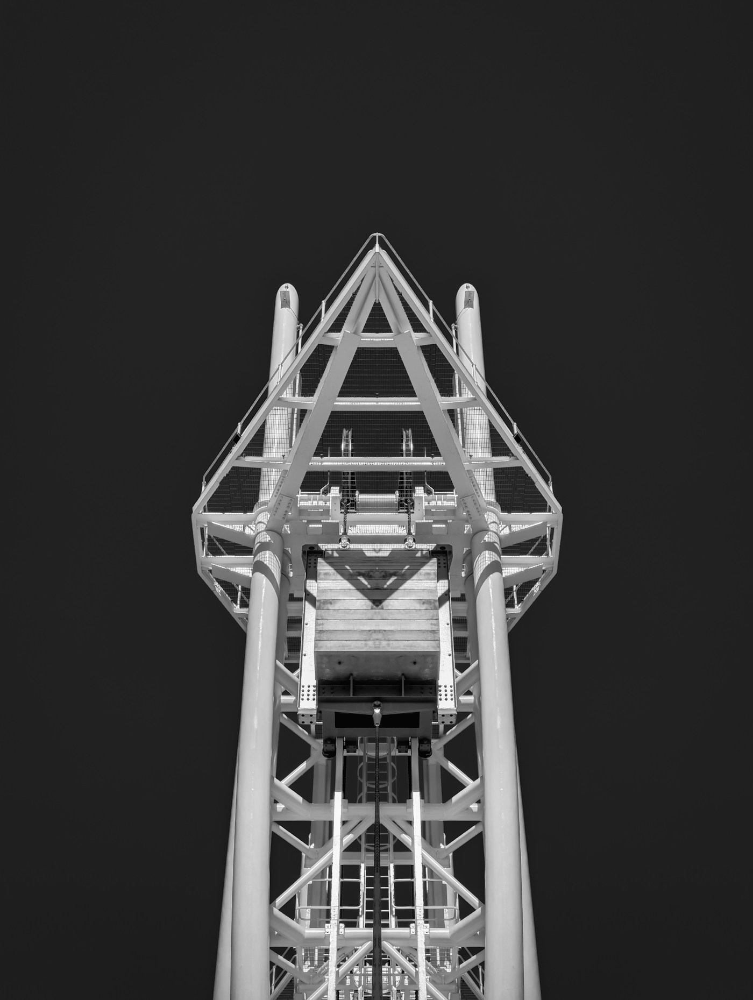
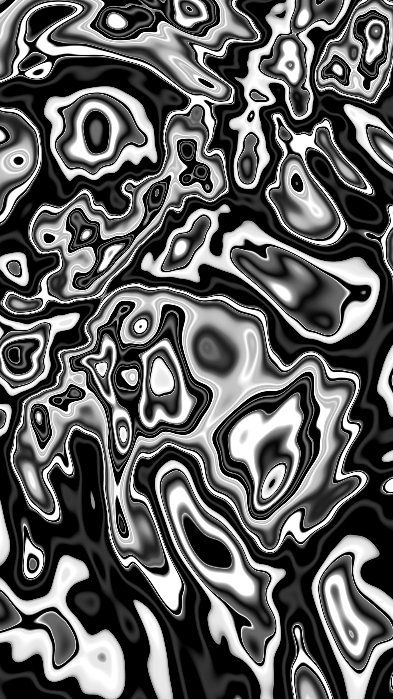
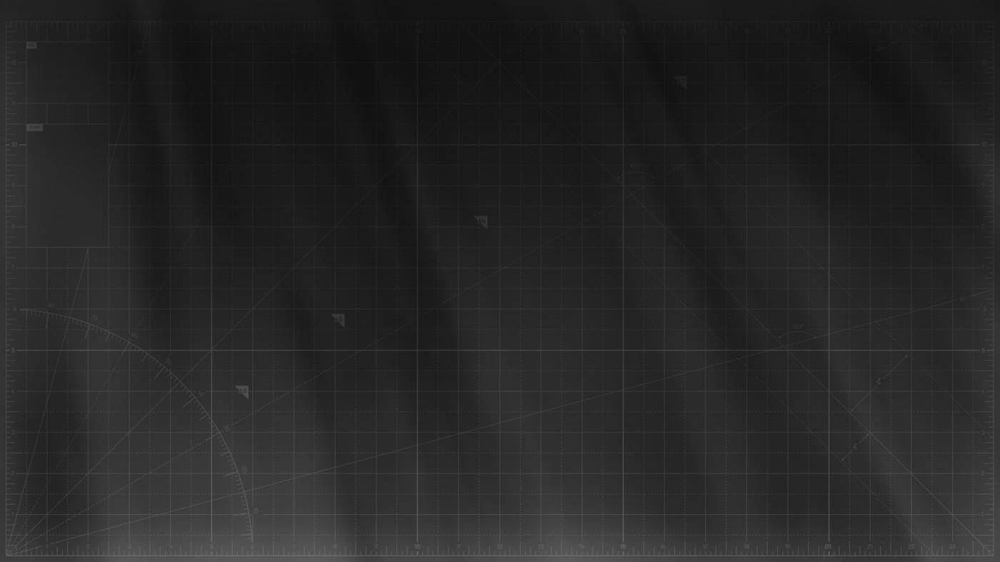

AGIまでの7段階と、企業という形式の崩れ方
AGI到達までの道筋を議論するとき、ほとんどの予測が「いつ来るか」と「何ができるようになるか」に集中する。ここでは角度を変える。同じ期間に企業という組織形式がどう変形していくかを追う。ChatGPT以前の2024年から、企業概念そのものが維持できなくなる2032年以降まで、組織の中で意思決定がどこに宿るかを軸に7つの段階を切っていく。
軸は一つに絞る。「その会社で、業務上の意思決定のうちAIが担う割合」だ。売上でも従業員数でもGPU保有量でもない。判断の所在をどこに置いているかだけが、組織形式の本質を規定する。Coaseが1937年に整理した取引コスト理論に従えば、企業が存在する理由は「市場で取引するより社内で調整したほうが安いから」という一点に集約される。AIが社内調整コストを限りなくゼロに近づけるとき、この不等号はどこかの段階で反転する。
反転は連続的には起きない。L0からL4まではなだらかな曲線だが、L4とL5のあいだに垂直に近い崖が存在する。水が100度で突然沸騰するのと同じ相転移の構造だ。この崖の位置を読み違えた企業から順に、殻だけ残して中身が蒸発していく。そして相転移の先でストラテジストに残る仕事は、古典的な戦略立案の5機能のうちたった一つになる。どれが消え、どれが残るのか。順番に辿っていく。
企業進化の7段階
L0からL6まで。意思決定の所在を軸に、組織図・人員構成・決算サイクル・本社という物理拠点がどう変形するかを段階別に描写する。
各段階の戦略選択肢
「何が脅威か」「選択肢は何か」「勝つ条件は何か」を段階別に列挙。過渡期の最適化がすべて負債に変わる理由を整理する。
ストラテジストの4職能
AGI時代に人間に残る仕事。目的関数の設計、相転移の予測、異質性の供給、責任の引受。この4つの時間配分がL0からL6でどう変わるか。
企業形態の7段階 — ピラミッドが液体を経て消滅するまで
本論に入る前に、L0からL6までの7段階がどのような組織形態を指しているかを一枚の図で俯瞰しておく。縦軸は取らない。横軸の時間と、各段階で組織の輪郭がどう変形するかだけを追う。ピラミッドから始まり、逆ピラミッド、ハブネットワーク、スパースメッシュを経て、L4とL5のあいだで垂直な崖を越え、雲状の液体形態に変わり、最後に輪郭が消えて目的関数のシンボルだけが残る。各段階の詳細は後続のスライドで一段ずつ掘り下げるが、まずはこの変形の連なりを網膜に焼き付けてほしい。
各段階の組織形態を視覚化した。L0の実線ピラミッドは人間100%の従来型組織。L1-L2で底辺と中間層が抜け、L3でハブ型ネットワークに組み替わる。L4では人間のノードが数個だけ残り、その周囲をAIメッシュが覆う。L4とL5のあいだに相転移帯が走り、L5では組織の輪郭が液体状に溶ける。L6では輪郭そのものが消え、目的関数を指すシンボルだけが残る。後続スライドの各段階解説は、この図のどの形態を指しているかを意識しながら読むと理解が早い。
この図で最も重要なのはL4とL5のあいだの崖である。L0からL4までの5段階は連続した変形の系列として描ける。ピラミッドが徐々に痩せ、逆転し、ノード化し、メッシュに置き換わっていく過程は滑らかに繋がる。しかしL4からL5への移行だけは、同じ形態系列の延長では描けない。輪郭そのものが固体から液体に変わる非連続点であり、ここが本論全体の中心主題になる。L5以降の2段階は、もはや「組織図」という言葉が機能しない世界だ。
L0からL4まで — 組織図が逆ピラミッドを経て空洞化する
L0は2024年以前の姿である。社員が個別にChatGPTを開き、議事録の要約やメールの下書きに使う。AIは組織図のどこにも存在しない。判断の100%が人間に属し、効率化された旧来型企業の範疇を出ない。この段階の会社がL1に進まない理由は技術でも予算でもなく、経営層が「道具の導入」と「組織設計の変更」を区別していないからだ。区別できないまま数年が過ぎると、次の段階で復帰不能なほど遅れる。
L1は2025年から2026年の姿だ。請求書処理、一次問い合わせ、議事録、コード補完にAIが常駐する。バックオフィスの採用が事実上停止し、新卒の定型業務ポストが消え始める。ただしこの段階での打撃は現場の「手」に集中する。管理職と意思決定層は無傷のまま残り、組織図の上半分は変わらない。L1で勝つ条件は単純だ。L2の準備に入れるかどうか。L1の効率化で満足した会社は、L2の段階で後ろから追い抜かれる。
L2は2026年から2027年にかけて訪れる。エージェントが「検知、判断、実行、記録」の業務ループを自走で回し始める。ここで組織の力学が決定的に変わる。管理職よりも業務設計者のほうが重要になる。ミドルマネジメントの役割は縮小し、組織は逆ピラミッド化する。組織図に初めてAIエージェントが正式に描かれるのもこの段階だ。L2で勝敗を決めるのはループ設計の巧拙である。エージェントに与える権限の範囲、例外処理の経路、ログの粒度、ガードレールの深さ。どれも地味だが、一つ間違えると業務全体が止まる。
L3は2027年から2029年にあたる。エージェントが財務分析、法務の一次レビュー、マーケティング運用で意思決定を担うようになる。人間のCxOは戦略方針とガードレール設定に集中し、執行の大半は手を離れる。副CxOポジションにAIが座り始めるのもこの段階だ。稟議と承認のフローは秒で回る。だが同時に、判断の硬直化という新しいリスクが立ち上がる。過去パターンの再生産に閉じたエージェントは、環境が変わってもそれに気づかない。L3で勝つ条件はガードレール設計の巧拙、つまりどこまで委任し、どこから人間が取り戻すかを厳密に線引きできるかに帰結する。
L4は2029年から2031年、CEOやCSO級の戦略判断にまでAIが関与する段階である。資本配分、M&A、事業撤退。人間の役割は目的関数の設定、倫理判断、最終承認に限定されていく。役員会はAIの判断をレビューする場に変わり、人間の人数は数人から数十人まで圧縮される。「AIが運営し、人間が所有する」形式が現れ始める。L4後期には目的関数そのものをめぐる競争が始まる。理念駆動型の企業と受託駆動型の企業に二分され、後者の時価総額は溶けていく。顧客の目的に最適化されただけの会社には、そもそも独自の目的が残っていないからだ。
L5の液体化とL6の消滅 — 相転移は水の沸点と同じ構造を持つ
L5は2031年から2032年、ごく短期間だけ観測される。組織図は描けない。エージェントが毎日生まれて死んでいくからだ。従業員数という指標が意味を失う。人間は数人、エージェントは数百から数万、しかも構成は日単位で入れ替わる。決算四半期が無意味になる。事業の寿命より決算サイクルのほうが長くなるからだ。本社という物理拠点は消え、登記上の住所だけが法的要件として残る。L5は「安定した次段階」ではなく不安定な遷移状態であり、滞在時間は数ヶ月から1年ほどしかない。
L6は2032年以降、企業という概念そのものが主役の座を降りる段階である。Coaseの取引コスト理論で説明すると、市場取引コストが社内調整コストを下回るという不等号の反転が決定的になる。企業が存在していた3つの理由 — 取引コスト削減、リスク集約、有限責任 — が同時に崩壊する。エージェント間の契約コストは限りなくゼロに近く、リスクはスマートコントラクトで分散でき、有限責任は法的な殻として残りはするが実質的な意味を持たない。残るものは4つしかない。理念コミュニティ、資本プール、物理的拠点、そして目的関数を設定する人間の判断だ。株式会社は殻として法的に残り続ける。ただし主役ではなくなる。
L5からL6への移行は緩やかではない。相転移という言葉を比喩ではなく精確な意味で使っている。水は99度から100度への1度で突然沸騰する。99度までの水と100度を超えた水蒸気は、分子構造も体積も運動様式も連続的につながらない。企業の崖も同じ構造を持つ。自動化率のカーブを描くと、L0からL4までは上に凸の連続曲線、L4からL5で急峻に立ち上がり、L5からL6のあいだに垂直な崖が現れる。
この崖を作る要素は3つある。一つ目はエージェント間契約コストの崩壊だ。ERC-8004のようなエージェントID、レピュテーション、検証の標準化が進むと、会社同士で結ばれていた契約の大半がエージェント同士の直接取引に置き換わる。二つ目は資本調達の個別化である。AGIが個人投資家の目的関数を読み取り、投資家ごとに最適なポートフォリオを個別に編成できるようになると、上場企業という集約装置を経由する必然性が薄れる。三つ目は規制の後追い崩壊だ。規制が技術に5年遅れる構造は変わらないが、5年の遅れは相転移期には致命的に長い。1社が「会社を解散してエージェント連合に再編する」と宣言した瞬間、コスト構造の差でドミノ倒しが始まる。
描けない組織図
エージェントが日単位で生成・消滅し、従業員数という指標が失効する。四半期決算は事業寿命より遅い周期になり、本社は登記上の住所に縮む。安定段階ではなく遷移状態で、滞在時間は数ヶ月から1年。
Coaseの反転
取引コスト削減・リスク集約・有限責任という企業存在の3理由が同時に崩壊。残るのは理念コミュニティ、資本プール、物理拠点、目的関数を設定する人間の4要素。株式会社は殻として残るが主役ではない。
自動化率の曲線 — L4からL5の垂直な崖を視覚化する

7段階の全体像を一本のカーブで示すと、L4とL5のあいだで線が垂直に立ち上がる構造がはっきり見える。縦軸は業務上の意思決定のうちAIが担う割合、横軸は2024年から2032年以降までの時間。L0の5%からL1の15%、L2で35%、L3で60%、L4で88%、そしてL5で97%、L6で99%台へ到達する。数値そのものより曲率の変化に注目してほしい。L3からL4にかけて曲線の傾きは急峻になり、L4の後半からL5のあいだで一度傾きが無限大に近づく。そこが相転移の崖だ。
縦軸は業務意思決定のうちAIが担う割合。各段階の中央値をプロットし、L4後期からL5にかけて相転移帯を強調した。L5は安定状態ではなく遷移状態であり、実際の滞在時間は数ヶ月から1年程度。L6は「企業が概念として消滅した後」の世界を指し、自動化率は100%に漸近するが到達しない。最後まで残る1%弱が、人間の目的関数設定と最終責任の引受である。
曲線を読むうえで注意すべき点が3つある。第一に、業界差は横軸のずれとして現れる。製造業の一部はL3の壁で止まるだろうし、金融は規制の壁を抱えたままL4を迎える。広告・メディアのようにソフト資産が中心の業界は、全体の数年先を走る。第二に、地域差も横軸のずれとして現れる。日本は平均して1から2段階遅れる可能性が高い。規制と終身雇用慣行が摩擦として作用する。第三に、縦軸の数値は絶対ではない。重要なのは各段階でカーブの傾きがどう変わるか、であって、87%なのか92%なのかという数字の精度ではない。
この曲線を使って将来の経営判断をするとき、最も誤りやすいのは「まだL2だから大丈夫」という読みだ。L2で下した設備投資の多くは、L3に入った瞬間に不良資産になる。L3の業務フローはL4の相転移で一度リセットされる。各段階で正解だった投資は、次の段階に入る前に負債に変わる。この非連続性を前提にしない限り、カーブを読む意味がない。
各段階で企業が取りうる選択肢 — 過渡期の最適化はすべて負債になる

段階ごとに脅威の形と選択肢の数が変わる。外部環境分析として一般論で整理すると、企業が取りうる戦略は概ね下表のような形に収斂する。どの選択肢にも正解はない。段階ごとに「勝つ条件」が違い、その条件を外した会社は次の段階で淘汰される。重要なのは選択肢の数ではなく、1段階先の環境を想定した上で、いま何を選ぶかだ。
| 段階 | 主な選択肢 | 勝つ条件 |
|---|---|---|
| L0-L1 2024-2026 |
早期縮小戦略 / 再配置戦略 / 静観戦略。バックオフィスの採用停止と余剰人員の配置転換をどの速度で進めるか | L2の準備に入れるかどうか。L1の効率化で満足した会社はL2で後ろから抜かれる |
| L2 2026-2027 |
フル自動化先行投資 / 部門選択戦略 / 新会社分離戦略 / アウトソース戦略。エージェントに業務ループをどの範囲で委ねるか | ループ設計の難易度を舐めないこと。例外処理とログ設計で差がつき、安易な先行投資は負債化する |
| L3 2027-2029 |
完全委任 / 人間-AI協調 / 領域分割 / 意図的後退。経営判断のどこまでAIに預けるか | ガードレール設計の巧拙。委任範囲を明確に線引きできないと、過去パターンの再生産で環境変化を見落とす |
| L4 2029-2031 |
目的関数駆動経営 / 複数エージェント並列 / 人間CEO堅持 / プライベート化。戦略判断そのものをAIにどう預けるか | 経営者が何を手放せるか。理念を持たない受託駆動型は時価総額が溶け、目的関数の独自性だけが堀になる |
| L5-L6 2031+ |
相転移先回り / 殻化 / コミュニティ転換 / 規制保護領域撤退 / 能動的解散。会社形態を維持するか、解体して再編するか | 事前準備したポジションのまま相転移に乗る以外にない。崖に差し掛かってからの戦略変更は間に合わない |
全段階を貫く3つの原則がある。第一に、1段階先の準備がその段階の勝敗を決める。L2の勝者はL1のうちにループ設計を始めていた会社で、L4の勝者はL3のうちに目的関数を言語化していた会社だ。第二に、過渡期の最適化はすべて負債になる。L2のワークフロー設計はL3で陳腐化し、L3の組織構造はL4で解体を強いられる。第三に、企業の寿命は意思決定速度で決まる。年次計画から四半期、月次、日次、そしてリアルタイム。決定周期を1段ずつ短縮できない会社から順に、次の段階で脱落していく。
選択肢の比較で見落としてはならないのは、「静観戦略」や「意図的後退」も能動的な選択として扱うべき点だ。全ての会社がフロントランナーを目指す必要はない。規制保護領域に残って時間を稼ぐ、ニッチな専門領域で人間の関与価値を守る、といった戦略は段階によっては正解になる。問題は、静観を「選択」ではなく「判断の先送り」として採用してしまう組織文化だ。先送りは決断の欠如であり、次の段階で復帰不能な遅れを生む。相転移は待ってくれない。気づいたときには、自社が変わるべき先の形がもう存在しない。
古典的ストラテジストの5機能のうち、4つはAGIに置き換わる
古典的な経営学が定義するストラテジストの仕事は、おおむね5機能に分解できる。環境分析、ポジショニング、リソース配分、実行計画、そして目的関数設定だ。AGI時代に人間に残るのはこのうち最後の1つだけである。結論から言えば、AGIは「与えられた目的に対して最適解を出す機械」である以上、目的そのものを採用したり却下したりする判断主体にはなれない。判断主体であるためには、存在意義、価値観、責任の引受が前提として必要だ。AGIはそれらを持てない。
環境分析はAGIが桁違いに速くなる。市場データ、規制動向、競合動向、技術トレンドを並列に処理し、人間アナリストが数週間かかる作業を数分で済ませる。しかも観測範囲が圧倒的に広く、ノイズとシグナルの切り分けも精度が高い。ポジショニングも同様で、ゲーム理論、シミュレーション、ナッシュ均衡の計算はAGIの得意領域そのものだ。リソース配分の最適化に至っては、線形計画法や強化学習で人間が入る余地が最初からない。実行計画は目的とリソースが決まればただのスケジューリング問題で、AGIにとって退屈な雑務に近い。
この4機能が置き換わったとき、人間のストラテジストに何が残るかを真剣に問う必要がある。答えは目的関数設定であり、それを支える4つの職能に分解できる。目的関数の設計者、相転移の予測者、異質性の供給者、責任の引受人。この4つのどれもが、AGIが原理的に苦手とする領域か、あるいは責任主体としての人間にしか担えない領域にある。順番に見ていく。
目的関数の設計者
何を最大化するかを決める仕事。売上、ブランド価値、従業員の幸福度、規制リスク、10年後の通用性。矛盾を含むこれらを、矛盾を残したまま重み付けするのは人間にしかできない。多目的最適化の「重み」は価値判断であり、計算ではない。
相転移の予測者
AGIは過去データから学ぶため、連続変化には強いが非連続変化に構造的に弱い。「まだ起きていないことを想像する」能力は人間の残された強みだ。L4からL5の崖を事前に読むのはこの職能の仕事で、段階ごとに切る作業はその実装方法である。
異質性の供給者
全企業が同じAGIを使って最適化すると戦略が収斂し、モノカルチャー化した業界は外部ショックに脆くなる。意図的に異質な視点を注入するのがこの職能。AGIは問いを立てられても、問いの中から「本質的な問い」を選別できない。
責任の引受人
AGIの判断結果の責任を引き受けるのは人間だけだ。消極的な役割に見えるが、戦略の質を決める要因になる。テールリスクの評価は、責任を引き受ける主体でなければ本質的にはできない。責任を持たない判断は必ず楽観に寄る。
4職能の時間配分は段階別に逆転する
4職能の時間配分は、各段階で大きく入れ替わる。L0からL1の段階で最も大きな比重を占めるのは責任の引受だ。AIが判断を下しても、外部への説明責任、規制当局との対話、顧客への謝罪と補償、社内への示達はすべて人間が引き受ける。AIが増えるほど責任範囲が広がるという逆説が、この段階ではストラテジストの時間を圧迫する。目的関数の設計はまだ10%程度にとどまる。L0-L1の段階では「何を最大化するか」をAIに渡しても、AIが扱えるのは短期KPIだけで、中長期の価値観はまだ人間の頭の中にしかない。
L2からL3にかけて、時間配分は徐々に変わる。責任引受の比重が少しずつ下がり、目的関数設計と相転移予測の比重が上がっていく。L3の中盤で、相転移予測が初めて全体の25%を超える。この段階のストラテジストは「いまのワークフローがL4で消えること」を受け入れたうえで、次の段階に向けた準備を同時進行させる必要がある。現在と未来の両方を同じテーブルに並べる能力が、この段階で最も重要になる。
スタックドバーで100%を構成する4職能の配分。L0-L1では責任引受が主戦場(45%)、L4以降は目的関数設計が主戦場(35-60%)にシフトする。L6では責任引受がほぼゼロになるが、これは責任の消滅ではなく、エージェント間契約とスマートコントラクトによる責任分散が制度化された結果。人間は究極の目的関数 — 何のために存在するか — にだけ向き合うようになる。
L4以降のシフトはさらに急峻だ。L4で目的関数設計が35%に達し、L5で45%、L6で60%まで膨らむ。一方、責任引受はL4の10%からL6の0%へ収束する。責任がなくなるのではない。責任がエージェント間のスマートコントラクトに分散し、制度化された結果、人間が個別案件ごとに引き受ける場面が消えるからだ。L6の段階で人間に残るのは究極の目的関数、つまり「何のために存在するか」という問いだけになる。この問いはAGIが解けない。なぜなら、AGI自身の存在目的はAGIを作った人間が設定するものだからだ。
異質性の供給という職能も、段階によって重みが変わる。L0-L1では30%、L2で35%と最も高くなり、そこから徐々に下がってL6では20%まで減る。全盛期がL2にある理由は、この段階がループ設計の最初の大きな岐路であり、標準化された解法がまだ存在しないからだ。L2で正解を知っている会社はない。異質な問いを立てられる人間の価値がここで最も高く評価される。
AGI時代ストラテジストの一週間と、戦略概念そのものの変質

L3からL4にかけての段階で、ストラテジストの一週間は以下のように組み替わっていく。月曜日は環境変化サマリーを読む日だ。AGIが生成した環境変化サマリーに2から3時間をかけて目を通す。仕事は要約ではなく、重要度の判断と異常値の発見に絞られる。AGIが「この変化は重要だ」と分類した項目を鵜呑みにせず、分類から漏れた異常値を拾う。これがストラテジストの月曜日の価値だ。
火曜日は異質性供給のための読書と業界外対話の日になる。古典哲学、歴史、生物学、人類学。業界の外に時間を投じなければ、頭の中がAGIの分析パターンと同質化していく。この同質化は静かに進み、気づいたときには思考が収斂している。火曜日は意図的に非効率な時間を確保する日として機能する。水曜日は目的関数の点検日だ。AGIに複数の目的関数候補でシミュレーションを走らせ、それぞれの結果を人間が選択する。シミュレーション自体はAGIの仕事、選択は人間の仕事という分業がはっきりする。
木曜日はシナリオパッケージの更新日になる。シナリオは一度作って終わりの資料ではなく、毎週更新される生き物として扱われる。軍の作戦計画型に近い。トリガー条件、初動、中期施策、撤退基準の4項目を各シナリオに持たせ、トリガー監視自体はAGIに任せる。発動判断だけが人間に残る。金曜日は経営層との対話の日だ。判断の要請、論点の整理、反対意見の提示。4日分の分析を1つの対話に凝縮する、最も人間的で最も疲れる日になる。
ストラテジストの組織内ポジションも変わる。人数は1人から2人で足りる。AGIが分析と資料作成の大半を代替するからだ。所属はCEO直下ではなく取締役会直下に変わる。執行から独立し、目的関数の妥当性を直接報告する位置だ。任期は3年から5年で固定交代する。長く同じポジションにいると、思考がAGIの分析パターンと同質化していく。交代しない組織は異質性供給の職能を失う。評価指標も変質する。回避した相転移リスクの数、採用された目的関数の事後有効性、異質な問いの質といった定性指標が前面に出る。売上貢献度という古い物差しは意味をなさない。
結びにあたる論点は、戦略概念そのものの変質だ。古典的な戦略は「勝つための計画」だった。AGI時代の戦略は「何を大事にするかの宣言」になる。計画よりも価値観が上位に来て、経営学よりも倫理学、政治哲学、歴史、人類学のほうが戦略立案に必要な知識になる。MBA教育は根本から変わる必要があり、変わらなければAGI時代のストラテジストは別の分野から供給されるようになる。哲学科の卒業生がストラテジストを名乗る時代は、早ければ5年以内に始まる。この変化を受け入れるかどうかが、経営者と教育機関の両方に突きつけられた問いである。
7段階のカーブを読み、相転移の崖の位置を知り、4つの職能を時間配分として内在化させる。これがAGIまでの企業進化を生き延びるための最小セットだ。計画ではなく宣言、分析ではなく判断、そして何よりも、責任を引き受ける人間の存在が最後まで残る。L6の世界で「企業」と呼ばれるものが殻しか残らないとしても、その殻の中で目的関数を設定する人間は残る。ストラテジストの仕事は消えない。ただし、これまでのストラテジストの仕事のほとんどは消える。